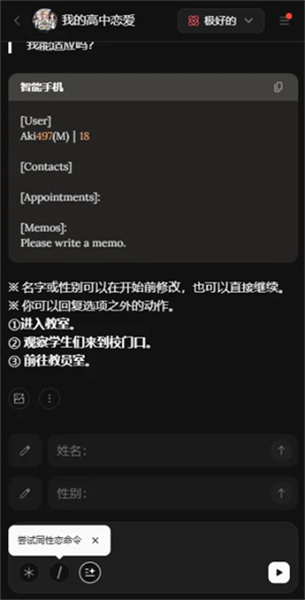

蹲了三遍动画还不够？我在这个 AI 故事里自己当起了主角
一个周末晚上的偶然发现，让我从"剧情党"变成了"造剧人"——不用写代码不用投稿，直接在 AI 生成的世界里做任何你想做的事。
那个周末我终于忍不住了
周六晚上十一点，我蹲在出租屋的小沙发上，手里攥着第三罐冰可乐，屏幕上是那部我已经刷了三遍的动画。
我不是什么资深二次元，但这部片子的剧情确实戳人——男主一路跌跌撞撞，每次到了该出手的关键时刻，他总是优柔寡断得让我想把手机捏碎。
"换我早冲上去了。"我对着空气嘟囔，然后自己也觉得好笑。
这不是我第一次有这种冲动。追小说、玩 Galgame、看日剧，但凡故事里有让我着急的转折，我都会在脑子里偷偷演一遍"如果我是主角"的版本。但那些都是别人写好的，我改不了。
直到我那个同样蹲在家里的朋友发来一条消息："你试试 OOC。"
它不是又一个聊天机器人
说实话一开始我没太当回事。AI 聊天的东西我见过不少，要么是生硬的套话，要么是跑题跑到月球。但这个朋友是个写了三年同人本的家伙，他推荐的东西通常不会太差。
打开那个官网，一眼就看出来这玩意儿的定位不一样——不是让你跟 AI 闲聊解闷的，是让你"进入一个故事"。里面有成百上千部用户创作的互动作品，题材从都市日常到奇幻冒险应有尽有，每一部都是一个可以让你"活进去"的世界。
我从官方下载拿了个安装包装上，注册只用了邮箱，几秒钟就搞定。界面干净，没有花里胡哨的广告，首页就是作品广场——排行榜、分类标签、官方推荐，像一个小说网站，但每个标题下面多了一行小字："开始演出"。

选哪部？官方线给我打了个样
面对那么多作品我有点懵，不知道从哪开始。朋友说新手先玩官方线，也就是那个叫 OOC 的账号自己做的原创作品——这些是平台的标杆，质量有保证，能最快摸清楚玩法边界。
我选了一部叫"退休英雄的育儿日记"的养成类作品。点进去先看了故事简介：曾经拯救过世界的大英雄，隐退之后要独自抚养一个小女孩长大。就这设定，戳中了我这个老父亲的心。
开始演出。屏幕上出现了第一段场景描写，然后底部弹出了几个动作选项："摸摸她的头"、"给她做早饭"、"问问她想出去玩吗"。
重点来了——这些选项不是必须选的。输入框在旁边明明白白地写着：你也可以输入任何你想做的事。
我想了想，敲了一行字："蹲下来和她平视，轻声说'今天想去哪里玩？爸爸都陪你。'"
AI 的回复像写好的小说段落一样流出来：小女孩歪着脑袋想了想，眼睛突然亮了起来...
我愣了一下。这不是"选项 A 触发剧情 1"的那套老路子，它真的在接我抛过去的每一个动作、每一句台词。
点数这回事：省着用也能玩得爽
玩了半小时我才注意到顶部有个计数器在跳——原来这东西不是无限玩的，每条回复要消耗点数。我翻了一下设置，顺便去OOC文档扫了扫说明，四种档位可选：
- Superb（极好）：90 点，画面和描写最精细
- Skillful / Extensive（熟练 / 丰富）：各 60 点，侧重不同
- Basic（基础）：30 点，最省
社区里的老手有一套省钱节奏：日常推进用 Basic，遇到关键场景——比如小女孩第一次喊我"爸爸"的那一幕——切 Superb。我照着试了试，确实，高潮段落换个高档位，AI 给的回复质量明显不一样，细节丰富了很多。
而且我发现角色模式加 Basic 模型是免费的，官方承诺不限量畅聊。想练手感的时候可以去角色模式随便霍霍，不用心疼点数。
会话里藏着几个好用的小工具
玩到后来我慢慢摸出了几个实用的操作。
AI 的每条回复左侧都有个小菜单，可以编辑或者删除。有一次 AI 把小女孩的发色写错了——设定里是银金色，它给写成了深棕色——我直接点编辑改成正确的，后面的剧情自动就跟上了，不用跟它反复纠正。
还有个叫"状态便签"的东西，AI 在会话上方维护着一张小纸条，记着当前剧情里的联系人、约定和备忘事项。相当于角色的记事本吧，帮双方锚定剧情状态，玩久了不会混乱。
斜杠指令也挺方便，在输入框打个 / 就能呼出快捷菜单——不满意上一条回复可以重写，想看记忆面板就呼出 Memories，调参数也不用翻设置，当场改当场生效。

一个周末，造了三个故事的结局
从周六晚上到周日下午，我在 OOC 里泡了大概六七个小时。看完了"退休英雄的育儿日记"的一条线，又自己开了一部都市日常的故事——这次我是个刚毕业的程序员，在一家创业公司遇上了一堆奇奇怪怪的同事。
当然，这部是社区用户写的，质量明显不如官方线，但胜在题材新鲜，而且我可以用自由输入框做任何事。我让 AI 写我在公司团建时的尴尬场面，写我第一次跟暗恋的同事搭话，甚至写我熬夜改 bug 时遇到的诡异 bug 日志——它都接得住。
说实话，这种体验挺奇妙的。以前看小说或者玩游戏，我是个"观察者"；在 OOC 里，我是"参与者"，甚至可以说是"合著者"。每一段剧情都是我和 AI 一起写出来的，没有标准答案，没有固定结局。
用完之后我在想什么
说不上有多大的感悟，就是觉得这个东西挺适合像我这样的人——喜欢故事但没力气自己动笔写，想体验不同人生但没那个条件真的去经历。
它不是替代小说，也不是替代游戏，就是一个介于两者之间的新东西。你可以把它当互动小说读，也可以把它当文字版 RPG 玩，甚至可以把它当一个"情景模拟"工具，排练一下明天要跟老板说的话——只要你能想到的场景，都能试。
哦对了，那个写同人的朋友说他最近在 OOC 里练手感，把 AI 生成的段落改一改就能当素材。确实，想自己写故事发布的话，平台给的工具和指引还挺全。感兴趣的话，也可以去GitHub、Gitee或GitCode翻翻看更多细节。
总之，那个周末我没刷完第四遍动画，但比刷动画开心多了。